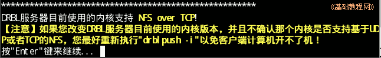

DRBL 操作指南
作者：TeliuTe 来源：基础教程网
三、生成客户机系统 返回目录 下一课服务端程序安装好以后，就可以安装客户机的启动系统；
1、生成客户机系统
1）进入终端，输入命令 sudo /opt/drbl/sbin/drblpush -i
2）在出来的域名服务器地址中输入DNS，或者直接按回车；
3）接下来的 NIS/YP 服务系统，直接按回车或输入一个名称；
4）接下来是客户机的名称前缀，输入 st-
5）接下来是搜索服务器的网卡，一般是 eth0 也可能是 eth1，直接按回车；
6）接下来提示服务器上只找到一块网卡，是否继续，输入 y 按回车继续；
7）接下来询问是否收集客户机的网卡信息，输入 y 然后按回车；
2、收集客户机网卡信息
1）提示开始收集，这时开启下面的客户机，并选择从网络启动；
2）等所有客户机都开启后，回到服务器按一下 1，看看收集的数量(Total)是否跟预期相同，再输入 2 完成；
3）接下来询问是否每次都分配相同 IP，输入 y 按回车继续；
4）接下来是客户机的网卡信息保存文件，直接按回车继续，默认存放在 /etc/drbl/macadr-eth0.txt，也可能是macadr-eth1.txt；
5）接下来是客户机 IP 地址的起始值，一般是从2开始，输入2按回车继续；
6）然后是确认 IP 是否正确，检查一下输入 y 按回车继续；
7）然后出来一个当前的简介，按回车键继续；
3、客户机系统
1）在出来的客户机系统模式中输入1，这是tmpfs模式，客户机的系统配置不会被随意修改；
2）接下来是再生龙系统的工作模式，同样选择1，这是用在系统备份和还原的系统；
3）接下来是询问用再生龙备份时的，备份文件存放路径，直接按回车即可，这儿存放客户机系统备份文件；
4）接下来询问是否使用客户机硬盘作为交换文件，输入y继续；
5）接下来询问用多大硬盘空间，直接按回车即可；
6）接下来是客户机的启动菜单，输入1按回车继续，选择图形模式；
7）接下来的客户机登录方式，输入1按回车，选择自动登录；
8）接下来的客户机登录密码，输入 n ，也可以输入y自动生成；
9）接下来输入客户机的用户登录密码，输入两遍然后按回车继续；
4、客户机系统
1）在接下来的客户机管理、开机密码、开机选择系统、等待时间、图形界面、使用音频设备、外网IP、使用终端，都直接按回车继续；
2）一直到您是否要让 DRBL 代理客户机 NAT 上网中，输入 n 不代理，如果选y，则客户机开机后，可以通过服务器代理上网；
3）接下来的提示信息，按回车继续；

4）接下来的防火墙改写提示，输入 y 按回车继续；
5）然后耐心等待生成系统，出现命令提示符就完成了；
6）这时重新启动客户机，就会出现 DRBL 无盘系统的启动界面；
7）然后耐心等待系统启动，一般会自动启动进入系统，如果没有就用用户名和密码登录；
8）如果不能用户名登录，可以用下一节的添加 DRBL 用户的命令手动添加用户；
管理命令参考：http://drbl.nchc.org.tw/one4all/desktop/drbl-cmd-list.php
本节学习了生成客户机系统的基础知识，如果你成功地完成了练习，请继续学习下一课内容；
本教程由86团学校TeliuTe制作|著作权所有
基础教程网：http://teliute.org/
美丽的校园……
转载和引用本站内容，请保留版权信息和本站链接。